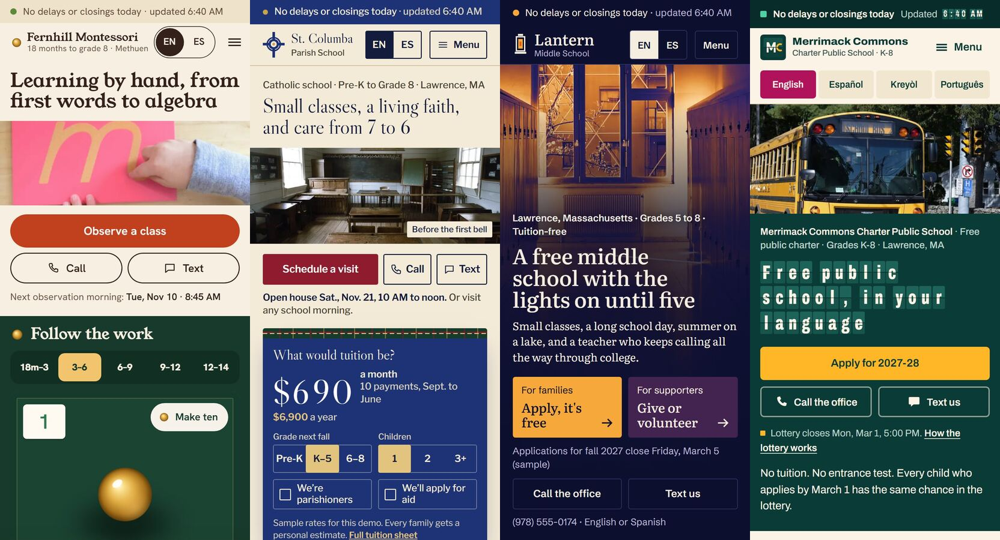
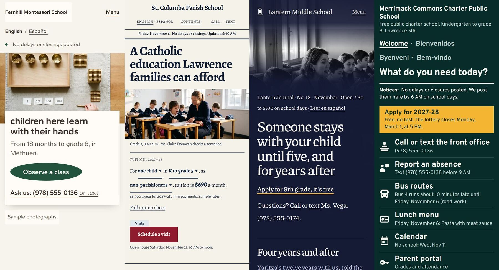
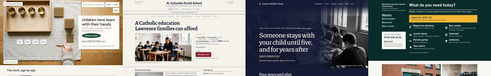
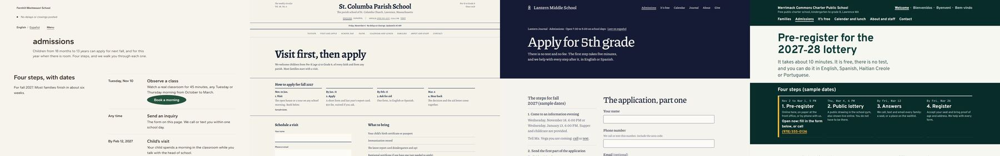

Friday, November 6, 2026 · overnight work while you slept
School demos: morning report
Gist: all four school demos are now real multi-page websites, live on the links below. Fernhill has 20 pages, St. Columba 24, Lantern 45, and Merrimack Commons 85 in four languages.
Overnight I ran three senior-reviewer rounds with Codex as principal engineer, design director and studio owner. They covered the world generator, the workflow and the sites. I fixed every engineering finding, and an independent re-run confirmed each fix.
What's left is design and business calls for you; they're listed at the bottom. None of the sites is "accepted" yet: the art-direction scores are still below the bar (details in "Honest status").
Open the sites (phone links)
The demo index, with the old one-page prototypes for comparison: irving1211.github.io/school-demos-5d1634. The pages are noindex and blocked in robots.txt.
Before and after
Yesterday evening, round 1 (phone, first screen)
The four looked like one template: the same status strip, the same pill buttons, the same Call/Text pair and a colour block per section.

This morning (phone, first screen)
Each school has its own organising idea:
- Fernhill: a worktable and label card
- St. Columba: a newspaper front page with the tuition sentence
- Lantern: a journal cover
- Merrimack: a four-language welcome and a task counter

Desktop homes and Admissions


The Admissions pages still converge. Each one is an intro, four dated steps and a form. The round-3 review flagged this, and it's the first design pass I recommend below.
What I built and fixed overnight
- One-page demos became real Astro websites. Each has:
- its own inner pages (Admissions, Tuition/Cost, Calendar and menus, About and staff, Policies, Contact, a 404)
- real
/es/routes, plus/ht/and/pt/on the charter site, with hreflang and canonical links - content kept as data (alerts, events, menus, staff)
- designed states: closure notice, empty week, form success, error and offline, no-JS
- Honesty fixes.
- Two demo forms were quietly sending what a visitor typed to the server while saying "nothing is sent". All four now send nothing, proven across 156 form states with 0 network requests.
- Every sample photo is labelled as a sample on its page, in that page's language.
- Dates that expire on their own, on Eastern time. The four sites had four different clocks. One was off by an hour in summer, and one switched days at 7 PM. They now share one New York clock. Past open houses and old notices disappear without a rebuild. This was tested from UTC, New York and Tokyo, winter and summer, across midnight.
- A shared engineering foundation (
packages/site-foundation, versions 0.1 to 0.4.1). Routes, page metadata, sitemap, form handling, clock and photo manifest are shared code. The look stays separate per school. Each site pins an exact version, so an update can't silently change a live site. 27 contract tests pass in 3 time zones. - Photos. The Blender layout and Flow pipeline produced the new hero and inner photos (0 credits). Every image has a manifest entry with its source, licence and sample label. The licences were re-checked (CC0, CC BY 2.0 and CC BY-SA 2.0).
- The world generator (
tools/worldgen). It makes every new site a different "world" from a saved seed, Minecraft-style. Overnight it gained:- senior lint, which checks every page at every width, in every language
- a sibling-convergence check
- a Codex design judge with pass/fail/escalate
- a demo vs production acceptance profile
- release fingerprints, so the published files are proven identical to what was checked
- a portfolio status: old results are marked stale and never shown as current
- a production rule that a contact form must prove its enquiry actually arrived
- New rule for all our work:
~/.claude/rules/senior-standard.md(structure before surface, every state, a fresh-eyes review before you see anything, evidence over assertion). - Your saved Instagram reels (49 new) were ingested. Their checklists (launch hygiene, the "20 things vibe-coded sites miss", taste checks) are now built into the lint. Findings are in
Studio/research/2026-11-05-saved-reels/.
The three senior-review rounds
| Round | Reviewer seats | Found | Outcome |
|---|---|---|---|
| 1 | Principal engineer + design-systems lead | 13 findings, 10 High. The gate passed failed reviews, the novelty rule ran out of options, lint fought its own art direction, county exclusivity could be bypassed. | All fixed, 52/52 tests |
| 2 | QA lead + design director + studio owner | 12 findings. Coverage only sampled pages, error states were never entered, failed probes counted as passes, there was no demo vs production profile, and the sites were tested at the wrong address. | All fixed, 72/72 tests |
| 3 | Agency creative director + systems lead + studio owner | 10 findings. Demo forms sent data, nothing tied acceptance to the published files, the four clocks disagreed, Admissions converge, photos share one "gaze", a house voice is forming, and the demo scope risks being undersold at the entry price. | Engineering all fixed (86/86 tests, foundation package); design and business items are below for you |
Each round found a different class of problem: correctness, then QA and operations, then release, portfolio and business. That matches what we learned on the v2 build.
Honest status
Engineering checks (no Codex): all four PASS. That covers every route in every language at 390 and 1440 px, forms, tap targets, overflow, contrast, the photo labels and launch hygiene.
Published copies match the checked builds file for file: Fernhill 45/45, St. Columba 47/47, Lantern 76/76, Merrimack 106/106. A wrong-address visit gets a real 404. On GitHub Pages that is the host's 404 page, not each school's own; a real host would serve the school's own 404.
The final acceptance run with the Codex design judge ran on the exact published builds at 05:45-06:20. All four came back DEMO ACCEPTANCE FAIL, on design only.
- Lint passed on every site.
- Coverage completed: 278, 293, 372 and 703 checks.
- The art-direction score is the only thing below the bar of 8.
| School | Overall | The judge's top fixes |
|---|---|---|
| Fernhill | 6 | Tighter phone header so the next section shows. A designed tablet hero. Inner pages led by materials, with observation dates right under the intro. |
| St. Columba | 7 | A better phone crop of the classroom photo. Less title padding on inner pages. Carry the newspaper style into the forms and a staff directory. |
| Lantern | 6 | A hero crop per screen size that keeps the people. The form before the timeline on phones. Inner pages that aren't the same hero repeated. |
| Merrimack | 6 | A tighter language block on phones so tasks and a photo reach the first screen. Tighter inner pages. A matched arrival and classroom photo pair. |
Every fix the judge names is a composition change: inner pages, crops, tablet layouts and phone spacing. Not one is a bug. That matches round 3's call that the next gains are in ordinary pages and photo subjects. Photo truth is only noted, not failed, in demo mode, because every photo is a labelled sample. A real school still needs real photos.
Production launch for a real school still needs:
- real contact details
- a real form backend with a delivery receipt
- human Spanish review, plus Kreyòl and Portuguese for the charter
- real photos with permission
- a content owner
Two sites (St. Columba, Lantern) also need a daily rebuild to drop past dates.
Business plan from round 3 (proposal, not market research)
| Offer | Price | Boundary |
|---|---|---|
| Local essentials | $1,500 | 3 pages EN/ES, 1 enquiry form, supplied content, 1 revision round |
| Distinctive bilingual launch | $2,500+ | 5 pages EN/ES, one direction, 2 revision rounds, migration and handover, county/niche exclusivity |
| School admissions project | from $2,500 | A visit and admissions journey on the school's existing application system. A full site replacement is quoted separately. |
| Care | $150/mo | Hosting, monitoring, up to 30 min of edits a month, a reply within 2 business days |
- Economics: plan at $75/h. Cap the $1,500 tier at about 16 h and the $2,500 tier at about 26 h. If a job runs over, raise the price or cut scope next time; don't absorb it into Care.
- The danger it names: the demos have 20-85 pages. Showing them and quoting "$2,500" implies the whole system. Always list pages, languages, integrations and exclusions.
- Sales:
- Make a one-page report (3 evidenced observations, 30 min cap).
- You send it with an invitation to a 15-minute call.
- Show one relevant demo on a phone.
- Send a fixed-scope proposal.
- Take 50% up front.
- Month target: one paid delivery and a second booked project.
- Cut next month: more school demos, more generator options, prospect videos, unpaid redesigns.
Decisions for you
- Next design pass (my recommendation): make Admissions belong to each world, with distinct photo subjects and distinct voices.
- Fernhill: an observation morning
- St. Columba: a household admissions docket
- Lantern: a conversation with a named advisor
- Merrimack: the counter with eligibility and a receipt
- Packages and prices above: approve, change, or keep them internal.
- Generator pool additions: 58 candidate options harvested from the galleries, staged in
worldgen/harvest/, waiting for your approval. - The "IC Business Systems" credit on the demos. Builders removed it to silence a lint false alarm. The lint now allows it. Restore it?
- Language reviewers: a human Spanish reviewer, plus Kreyòl and Portuguese for the charter, before any real school sees the demos as a promise.
- From the reels:
- AI wording in ICBS's own marketing
- the PolyForm Shield licence (liquid-logo)
- Strix trial spend
- PHP2Shell wording in prospect reports
- the trigger-list mail service
- the interactive quote page and its signature wording
- a Keyword Planner account
- Deletions (needs your OK):
- a stray folder the tools wrote at
D:/c/Users/Irving/AppData/...(a path-rewrite slip) worldgen/out/r3-debug-deliver.mjs- the four
assets.manifest.old.jsonbackups - the round-1 prototype backups
- old
.bakfiles in worldgen
- a stray folder the tools wrote at
Where things live
- Sites:
D:/AgenticHub/projects/niche-demos-spike/sites/<school>/. Each is a git repo with a commit per step. - Foundation:
D:/AgenticHub/packages/site-foundation/(releases are immutable tarballs). - Generator:
D:/AgenticHub/tools/worldgen/. The full improvement log (rows 1-65) is in IMPROVEMENTS.md, and the reviews are inreview/round-1..3.md. - School audit and targets:
ObsidianVault-v2/output/school-prospects-2026-11-05/.